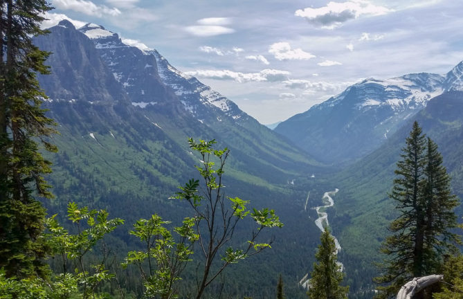

Summer, often most peoples' favorite time of year, has always been one of my least favorite for one reason: the heat. Summers in Bigfork, MT range between 70-85°, but as someone who is most comfortable in the 60°s, summers are often too hot for me. Regardless, summers in Bigfork are still more beautiful than most places.
Summer in the past couple of years, albeit toasty, have been absolutely magnificent. Most people live within walking distance of a hiking trail or a lake dock. With Glacier National Park in my backyard and Flathead Lake down the road, there are endless possibilites of things to do during any given day.